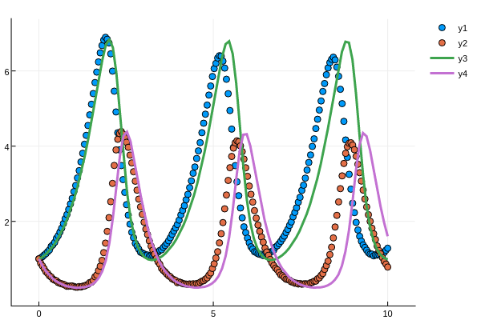
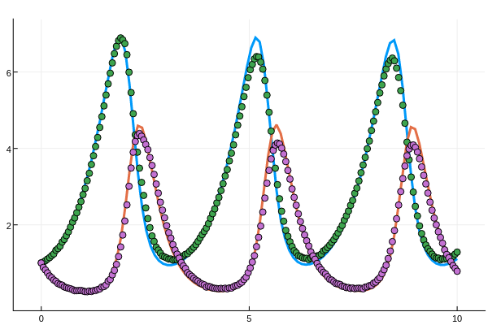
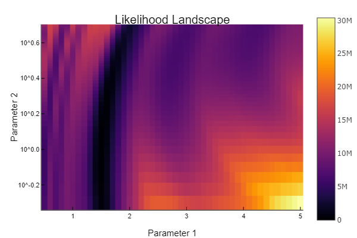
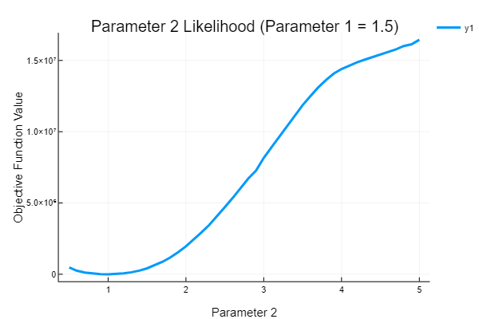

Parameter Estimation and Bayesian Analysis
Parameter estimation for differential equation models, also known as dynamic data analysis, is provided by the DiffEq suite.
Installation
This functionality does not come standard with DifferentialEquations.jl. To use this functionality, you must install DiffEqParamEstim.jl:
]add DiffEqParamEstim
using DiffEqParamEstimFor the Bayesian, methods, you must install DiffEqBayes.jl:
]add DiffEqBayes
using DiffEqBayesRecommended Methods
The recommended method is to use build_loss_objective with the optimizer of your choice. This method can thus be paired with global optimizers from packages like BlackBoxOptim.jl or NLopt.jl which can be much less prone to finding local minima than local optimization methods. Also, it allows the user to define the cost function in the way they choose as a function loss(sol), and thus can fit using any cost function on the solution, making it applicable to fitting non-temporal data and other types of problems. Also, build_loss_objective works for all of the DEProblem types, allowing it to optimize parameters on ODEs, SDEs, DDEs, DAEs, etc.
However, this method requires repeated solution of the differential equation. If the data is temporal data, the most efficient method is the two_stage_method which does not require repeated solutions but is not as accurate. Usage of the two_stage_method should have a post-processing step which refines using a method like build_loss_objective.
Optimization-Based Methods
Nonlinear Regression
build_loss_objective builds an objective function to be used with Optim.jl and MathProgBase-associated solvers like NLopt.
function build_loss_objective(prob::DEProblem,alg,loss_func
regularization=nothing;
mpg_autodiff = false,
verbose_opt = false,
verbose_steps = 100,
prob_generator = (prob,p)->remake(prob,p=p),
kwargs...)The first argument is the DEProblem to solve, and next is the alg to use. The alg must match the problem type, which can be any DEProblem (ODEs, SDEs, DAEs, DDEs, etc.). regularization defaults to nothing which has no regularization function. One can also choose verbose_opt and verbose_steps, which, in the optimization routines, will print the steps and the values at the steps every verbose_steps steps. mpg_autodiff uses autodifferentiation to define the derivative for the MathProgBase solver. The extra keyword arguments are passed to the differential equation solver.
Multiple Shooting objective
Multiple Shooting is generally used in Boundary Value Problems (BVP) and is more robust than the regular objective function used in these problems. It proceeds as follows:
- Divide up the time span into short time periods and solve the equation with the current parameters which here consist of both, the parameters of the differential equations and also the initial values for the short time periods.
- This objective additionally involves a discontinuity error term that imposes higher cost if the end of the solution of one time period doesn't match the beginning of the next one.
- Merge the solutions from the shorter intervals and then calculate the loss.
function multiple_shooting_objective(prob::DiffEqBase.DEProblem,alg,loss,
regularization=nothing;prior=nothing,
mpg_autodiff = false,discontinuity_weight=1.0,
verbose_opt = false,
prob_generator = STANDARD_PROB_GENERATOR,
autodiff_prototype = mpg_autodiff ? zeros(init_N_params) : nothing,
autodiff_chunk = mpg_autodiff ? ForwardDiff.Chunk(autodiff_prototype) : nothing,
kwargs...)For consistency multiple_shooting_objective takes exactly the same arguments as build_loss_objective. It also has the option for discontinuity_error as a keyword argument which assigns weight to the error occurring due to the discontinuity that arises from the breaking up of the time span.
Two Stage method (Non-Parametric Collocation)
The two-stage method is a collocation method for estimating parameters without requiring repeated solving of the differential equation. It does so by determining a smoothed estimated trajectory of the data (local quadratic polynomial fit by least squares) and optimizing the derivative function and the data's timepoints to match the derivatives of the smoothed trajectory. This method has less accuracy than other methods but is much faster, and is a good method to try first to get in the general "good parameter" region, to then finish using one of the other methods.
function two_stage_method(prob::DEProblem,tpoints,data;kernel= :Epanechnikov,
loss_func = L2DistLoss,mpg_autodiff = false,
verbose = false,verbose_steps = 100)The Loss Function
loss_func(sol)is a function which reduces the problem's solution to a scalar which the optimizer will try to minimize. While this is very flexible, two convenience routines are included for fitting to data with standard cost functions:
L2Loss(t,data;differ_weight=nothing,data_weight=nothing,
colloc_grad=nothing,dudt=nothing)where t is the set of timepoints which the data is found at, and data are the values that are known where each column corresponds to measures of the values of the system. L2Loss is an optimized version of the L2-distance. The data_weight is a scalar or vector of weights for the loss function which must match the size of the data. Note that minimization of a weighted L2Loss is equivalent to maximum likelihood estimation of a heteroskedastic Normally distributed likelihood. differ_weight allows one to add a weight on the first differencing terms sol[i+1]-sol[i] against the data first differences. This smooths out the loss term and can make it easier to fit strong solutions of stochastic models, but is zero (nothing) by default. Additionally, colloc_grad allows one to give a matrix of the collocation gradients for the data. This is used to add an interpolation derivative term, like the two-stage method. A convenience function colloc_grad(t,data) returns a collocation gradient from a 3rd order spline calculated by Dierckx.jl, which can be used as the colloc_grad. Note that, with a collocation gradient and regularization, this loss is equivalent to a 4DVAR.
Additionally, we include a more flexible log-likelihood approach:
LogLikeLoss(t,distributions,diff_distributions=nothing)In this case, there are two forms. The simple case is where distributions[i,j] is the likelihood distributions from a UnivariateDistribution from Distributions.jl, where it corresponds to the likelihood at t[i] for component j. The second case is where distributions[i] is a MultivariateDistribution which corresponds to the likelihood at t[i] over the vector of components. This likelihood function then calculates the negative of the total loglikelihood over time as its objective value (negative since optimizers generally find minimums, and thus this corresponds to maximum likelihood estimation). The third term, diff_distributions, acts similarly but allows putting a distribution on the first difference terms sol[i+1]-sol[i].
Note that these distributions can be generated via fit_mle on some dataset against some chosen distribution type.
Note About Loss Functions
For parameter estimation problems, it's not uncommon for the optimizers to hit unstable regions of parameter space. This causes warnings that the solver exited early, and the built-in loss functions like L2Loss automatically handle this. However, if using a user-supplied loss function, you should make sure it's robust to these issues. One common pattern is to apply infinite loss when the integration is not successful. Using the retcodes, this can be done via:
function my_loss_function(sol)
tot_loss = 0.0
if any((s.retcode != :Success for s in sol))
tot_loss = Inf
else
# calculation for the loss here
end
tot_loss
endNote on First Differencing
L2Loss(t,data,differ_weight=0.3,data_weight=0.7)First differencing incorporates the differences of data points at consecutive time points which adds more information about the trajectory in the loss function. Adding first differencing is helpful in cases where the L2Loss alone leads to non-identifiable parameters but adding a first differencing term makes it more identifiable. This can be noted on stochastic differential equation models, where this aims to capture the autocorrelation and therefore helps us avoid getting the same stationary distribution despite different trajectories and thus wrong parameter estimates.
The Regularization Function
The regularization can be any function of p, the parameter vector:
regularization(p)The Regularization helper function builds a regularization using a penalty function penalty from PenaltyFunctions.jl:
Regularization(λ,penalty=L2Penalty())The regularization defaults to L2 if no penalty function is specified. λ is the weight parameter for the addition of the regularization term.
The Problem Generator Function
The argument prob_generator allows one to specify a function for generating new problems from a given parameter set. By default, this just builds a new problem which fixes the element types in a way that's autodifferentiation compatible and adds the new parameter vector p. For example, the code for this is:
prob_generator = (prob,p) -> remake(prob,u0=convert.(eltype(p),prob.u0),p=p)Then the new problem with these new values is returned.
One can use this to change the meaning of the parameters using this function. For example, if one instead wanted to optimize the initial conditions for a function without parameters, you could change this to:
prob_generator = (prob,p) -> remake(prob.f,u0=p)which simply uses p as the initial condition in the initial value problem.
LeastSquaresOptim.jl objective
build_lsoptim_objective builds an objective function to be used with LeastSquaresOptim.jl.
build_lsoptim_objective(prob,tspan,t,data;
prob_generator = (prob,p) -> remake(prob,u0=convert.(eltype(p),prob.u0),p=p),
kwargs...)The arguments are the same as build_loss_objective.
lm_fit
lm_fit is a function for fitting the parameters of an ODE using the Levenberg-Marquardt algorithm. This algorithm is really bad and thus not recommended since, for example, the Optim.jl algorithms on an L2 loss are more performant and robust. However, this is provided for completeness as most other differential equation libraries use an LM-based algorithm, so this allows one to test the increased effectiveness of not using LM.
lm_fit(prob::DEProblem,tspan,t,data,p0;
prob_generator = (prob,p) -> remake(prob,u0=convert.(eltype(p),prob.u0),p=p),
kwargs...)The arguments are similar to before, but with p0 being the initial conditions for the parameters and the kwargs as the args passed to the LsqFit curve_fit function (which is used for the LM solver). This returns the fitted parameters.
MAP estimate
You can also add a prior option to build_loss_objective and multiple_shooting_objective that essentially turns it into MAP by multiplying the loglikelihood (the cost) by the prior. The option was added as a keyword argument priors, it can take in either an array of univariate distributions for each of the parameters or a multivariate distribution.
ms_obj = multiple_shooting_objective(ms_prob,Tsit5(),L2Loss(t,data);priors=priors,discontinuity_weight=1.0,abstol=1e-12,reltol=1e-12)Bayesian Methods
The following methods require the DiffEqBayes.jl
]add DiffEqBayes
using DiffEqBayesstan_inference
stan_inference(prob::ODEProblem,t,data,priors = nothing;alg=:rk45,
num_samples=1000, num_warmup=1000, reltol=1e-3,
abstol=1e-6, maxiter=Int(1e5),likelihood=Normal,
vars=(StanODEData(),InverseGamma(2,3)))stan_inference uses Stan.jl to perform the Bayesian inference. The Stan installation process is required to use this function. The input requires that the function is defined by a ParameterizedFunction with the @ode_def macro. t is the array of time and data is the array where the first dimension (columns) corresponds to the array of system values. priors is an array of prior distributions for each parameter, specified via a Distributions.jl type. alg is a choice between :rk45 and :bdf, the two internal integrators of Stan. num_samples is the number of samples to take per chain, and num_warmup is the number of MCMC warmup steps. abstol and reltol are the keyword arguments for the internal integrator. likelihood is the likelihood distribution to use with the arguments from vars, and vars is a tuple of priors for the distributions of the likelihood hyperparameters. The special value StanODEData() in this tuple denotes the position that the ODE solution takes in the likelihood's parameter list.
turing_inference
function turing_inference(prob::DiffEqBase.DEProblem,alg,t,data,priors;
likelihood_dist_priors, likelihood, num_samples=1000,
sampler = Turing.NUTS(num_samples, 0.65), syms, kwargs...)turing_inference uses Turing.jl to perform its parameter inference. prob can be any DEProblem with a corresponding alg choice. t is the array of time points and data is the set of observations for the differential equation system at time point t[i] (or higher dimensional). priors is an array of prior distributions for each parameter, specified via a Distributions.jl type. num_samples is the number of samples per MCMC chain. The extra kwargs are given to the internal differential equation solver.
dynamichmc_inference
dynamichmc_inference(prob::DEProblem,alg,t,data,priors,transformations;
σ = 0.01,ϵ=0.001,initial=Float64[])dynamichmc_inference uses DynamicHMC.jl to perform the bayesian parameter estimation. prob can be any DEProblem, data is the set of observations for our model which is to be used in the Bayesian Inference process. priors represent the choice of prior distributions for the parameters to be determined, passed as an array of Distributions.jl distributions. t is the array of time points. transformations is an array of Tranformations imposed for constraining the parameter values to specific domains. initial values for the parameters can be passed, if not passed the means of the priors are used. ϵ can be used as a kwarg to pass the initial step size for the NUTS algorithm.
abc_inference
abc_inference(prob::DEProblem, alg, t, data, priors; ϵ=0.001,
distancefunction = euclidean, ABCalgorithm = ABCSMC, progress = false,
num_samples = 500, maxiterations = 10^5, kwargs...)abc_inference uses ApproxBayes.jl which uses Approximate Bayesian Computation (ABC) to perform its parameter inference. prob can be any DEProblem with a corresponding alg choice. t is the array of time points and data[:,i] is the set of observations for the differential equation system at time point t[i] (or higher dimensional). priors is an array of prior distributions for each parameter, specified via a Distributions.jl type. num_samples is the number of posterior samples. ϵ is the target distance between the data and simulated data. distancefunction is a distance metric specified from the Distances.jl package, the default is euclidean. ABCalgorithm is the ABC algorithm to use, options are ABCSMC or ABCRejection from ApproxBayes.jl, the default is the former which is more efficient. maxiterations is the maximum number of iterations before the algorithm terminates. The extra kwargs are given to the internal differential equation solver.
Optimization-Based ODE Inference Examples
Simple Local Optimization
We choose to optimize the parameters on the Lotka-Volterra equation. We do so by defining the function as a function with parameters:
function f(du,u,p,t)
du[1] = dx = p[1]*u[1] - u[1]*u[2]
du[2] = dy = -3*u[2] + u[1]*u[2]
end
u0 = [1.0;1.0]
tspan = (0.0,10.0)
p = [1.5]
prob = ODEProblem(f,u0,tspan,p)We create data using the numerical result with a=1.5:
sol = solve(prob,Tsit5())
t = collect(range(0,stop=10,length=200))
using RecursiveArrayTools # for VectorOfArray
randomized = VectorOfArray([(sol(t[i]) + .01randn(2)) for i in 1:length(t)])
data = convert(Array,randomized)Here we used VectorOfArray from RecursiveArrayTools.jl to turn the result of an ODE into a matrix.
If we plot the solution with the parameter at a=1.42, we get the following:

Notice that after one period this solution begins to drift very far off: this problem is sensitive to the choice of a.
To build the objective function for Optim.jl, we simply call the build_loss_objective function:
cost_function = build_loss_objective(prob,Tsit5(),L2Loss(t,data),
maxiters=10000,verbose=false)This objective function internally is calling the ODE solver to get solutions to test against the data. The keyword arguments are passed directly to the solver. Note that we set maxiters in a way that causes the differential equation solvers to error more quickly when in bad regions of the parameter space, speeding up the process. If the integrator stops early (due to divergence), then those parameters are given an infinite loss, and thus this is a quick way to avoid bad parameters. We set verbose=false because this divergence can get noisy.
Before optimizing, let's visualize our cost function by plotting it for a range of parameter values:
vals = 0.0:0.1:10.0
using Plots; plotly()
plot(vals,[cost_function(i) for i in vals],yscale=:log10,
xaxis = "Parameter", yaxis = "Cost", title = "1-Parameter Cost Function",
lw = 3)
Here we see that there is a very well-defined minimum in our cost function at the real parameter (because this is where the solution almost exactly fits the dataset).
Now this cost function can be used with Optim.jl in order to get the parameters. For example, we can use Brent's algorithm to search for the best solution on the interval [0,10] by:
using Optim
result = optimize(cost_function, 0.0, 10.0)This returns result.minimizer[1]==1.5 as the best parameter to match the data. When we plot the fitted equation on the data, we receive the following:

Thus we see that after fitting, the lines match up with the generated data and receive the right parameter value.
We can also use the multivariate optimization functions. For example, we can use the BFGS algorithm to optimize the parameter starting at a=1.42 using:
result = optimize(cost_function, [1.42], BFGS())Note that some of the algorithms may be sensitive to the initial condition. For more details on using Optim.jl, see the documentation for Optim.jl. We can improve our solution by noting that the Lotka-Volterra equation requires that the parameters are positive. Thus following the Optim.jl documentation we can add box constraints to ensure the optimizer only checks between 0.0 and 3.0 which improves the efficiency of our algorithm:
lower = [0.0]
upper = [3.0]
result = optimize(cost_function, [1.42], lower, upper, Fminbox{BFGS}())Lastly, we can use the same tools to estimate multiple parameters simultaneously. Let's use the Lotka-Volterra equation with all parameters free:
function f2(du,u,p,t)
du[1] = dx = p[1]*u[1] - p[2]*u[1]*u[2]
du[2] = dy = -p[3]*u[2] + p[4]*u[1]*u[2]
end
u0 = [1.0;1.0]
tspan = (0.0,10.0)
p = [1.5,1.0,3.0,1.0]
prob = ODEProblem(f2,u0,tspan,p)We can build an objective function and solve the multiple parameter version just as before:
cost_function = build_loss_objective(prob,Tsit5(),L2Loss(t,data),
maxiters=10000,verbose=false)
result_bfgs = Optim.optimize(cost_function, [1.3,0.8,2.8,1.2], Optim.BFGS())We can also use First-Differences in L2Loss by passing the kwarg differ_weight which decides the contribution of the differencing loss to the total loss.
cost_function = build_loss_objective(prob,Tsit5(),L2Loss(t,data,differ_weight=0.3,data_weight=0.7),
maxiters=10000,verbose=false)
result_bfgs = Optim.optimize(cost_function, [1.3,0.8,2.8,1.2], Optim.BFGS())To solve it using LeastSquaresOptim.jl, we use the build_lsoptim_objective function:
cost_function = build_lsoptim_objective(prob1,t,data,Tsit5())The result is a cost function which can be used with LeastSquaresOptim. For more details, consult the documentation for LeastSquaresOptim.jl:
x = [1.3,0.8,2.8,1.2]
res = optimize!(LeastSquaresProblem(x = x, f! = cost_function,
output_length = length(t)*length(prob.u0)),
LeastSquaresOptim.Dogleg(),LeastSquaresOptim.LSMR())We can see the results are:
println(res.minimizer)
Results of Optimization Algorithm
* Algorithm: Dogleg
* Minimizer: [1.4995074428834114,0.9996531871795851,3.001556360700904,1.0006272074128821]
* Sum of squares at Minimum: 0.035730
* Iterations: 63
* Convergence: true
* |x - x'| < 1.0e-15: true
* |f(x) - f(x')| / |f(x)| < 1.0e-14: false
* |g(x)| < 1.0e-14: false
* Function Calls: 64
* Gradient Calls: 9
* Multiplication Calls: 135and thus this algorithm was able to correctly identify all four parameters.
We can also use Multiple Shooting method by creating a multiple_shooting_objective
function ms_f(du,u,p,t)
dx = p[1]*u[1] - p[2]*u[1]*u[2]
dy = -3*u[2] + u[1]*u[2]
end
ms_u0 = [1.0;1.0]
tspan = (0.0,10.0)
ms_p = [1.5,1.0]
ms_prob = ODEProblem(ms_f,ms_u0,tspan,ms_p)
t = collect(range(0,stop=10,length=200))
data = Array(solve(ms_prob,Tsit5(),saveat=t,abstol=1e-12,reltol=1e-12))
bound = Tuple{Float64, Float64}[(0, 10),(0, 10),(0, 10),(0, 10),
(0, 10),(0, 10),(0, 10),(0, 10),
(0, 10),(0, 10),(0, 10),(0, 10),
(0, 10),(0, 10),(0, 10),(0, 10),(0, 10),(0, 10)]
ms_obj = multiple_shooting_objective(ms_prob,Tsit5(),L2Loss(t,data);discontinuity_weight=1.0,abstol=1e-12,reltol=1e-12)This creates the objective function that can be passed to an optimizer from which we can then get the parameter values and the initial values of the short time periods keeping in mind the indexing.
result = bboptimize(ms_obj;SearchRange = bound, MaxSteps = 21e3)
result.archive_output.best_candidate[end-1:end]Giving us the results as
Starting optimization with optimizer BlackBoxOptim.DiffEvoOpt{BlackBoxOptim.FitPopulation{Float64},BlackBoxOptim.RadiusLimitedSelector,BlackBoxOptim.AdaptiveDiffEvoRandBin{3},BlackBoxOptim.RandomBound{BlackBoxOptim.RangePerDimSearchSpace}}
Optimization stopped after 21001 steps and 136.60030698776245 seconds
Termination reason: Max number of steps (21000) reached
Steps per second = 153.7405036862868
Function evals per second = 154.43596332393247
Improvements/step = 0.17552380952380953
Total function evaluations = 21096
Best candidate found: [0.997396, 1.04664, 3.77834, 0.275823, 2.14966, 4.33106, 1.43777, 0.468442, 6.22221, 0.673358, 0.970036, 2.05182, 2.4216, 0.274394, 5.64131, 3.38132, 1.52826, 1.01721]
Fitness: 0.126884213
Out[4]:2-element Array{Float64,1}:
1.52826
1.01721Here as our model had 2 parameters, we look at the last two indexes of result to get our parameter values and the rest of the values are the initial values of the shorter timespans as described in the reference section.
The objective function for Two Stage method can be created and passed to an optimizer as
two_stage_obj = two_stage_method(ms_prob,t,data)
result = Optim.optimize(two_stage_obj, [1.3,0.8,2.8,1.2], Optim.BFGS()
)
Results of Optimization Algorithm
* Algorithm: BFGS
* Starting Point: [1.3,0.8,2.8,1.2]
* Minimizer: [1.5035938533664717,0.9925731153746833, ...]
* Minimum: 1.513400e+00
* Iterations: 9
* Convergence: true
* |x - x'| ≤ 0.0e+00: false
|x - x'| = 4.58e-10
* |f(x) - f(x')| ≤ 0.0e+00 |f(x)|: false
|f(x) - f(x')| = 5.87e-16 |f(x)|
* |g(x)| ≤ 1.0e-08: true
|g(x)| = 7.32e-11
* Stopped by an increasing objective: false
* Reached Maximum Number of Iterations: false
* Objective Calls: 31
* Gradient Calls: 31The default kernel used in the method is Epanechnikov others that are available are Uniform, Triangular, Quartic, Triweight, Tricube, Gaussian, Cosine, Logistic and Sigmoid, this can be passed by the kernel keyword argument. loss_func keyword argument can be used to pass the loss function (cost function) you want to use and mpg_autodiff enables Auto Differentiation.
More Algorithms (Global Optimization) via MathProgBase Solvers
The build_loss_objective function builds an objective function which is able to be used with MathProgBase-associated solvers. This includes packages like IPOPT, NLopt, MOSEK, etc. Building off of the previous example, we can build a cost function for the single parameter optimization problem like:
function f(du,u,p,t)
dx = p[1]*u[1] - u[1]*u[2]
dy = -3*u[2] + u[1]*u[2]
end
u0 = [1.0;1.0]
tspan = (0.0,10.0)
p = [1.5]
prob = ODEProblem(f,u0,tspan,p)
sol = solve(prob,Tsit5())
t = collect(range(0,stop=10,length=200))
randomized = VectorOfArray([(sol(t[i]) + .01randn(2)) for i in 1:length(t)])
data = convert(Array,randomized)
obj = build_loss_objective(prob,Tsit5(),L2Loss(t,data),maxiters=10000)We can now use this obj as the objective function with MathProgBase solvers. For our example, we will use NLopt. To use the local derivative-free Constrained Optimization BY Linear Approximations algorithm, we can simply do:
using NLopt
opt = Opt(:LN_COBYLA, 1)
min_objective!(opt, obj)
(minf,minx,ret) = NLopt.optimize(opt,[1.3])This finds a minimum at [1.49997]. For a modified evolutionary algorithm, we can use:
opt = Opt(:GN_ESCH, 1)
min_objective!(opt, obj)
lower_bounds!(opt,[0.0])
upper_bounds!(opt,[5.0])
xtol_rel!(opt,1e-3)
maxeval!(opt, 100000)
(minf,minx,ret) = NLopt.optimize(opt,[1.3])We can even use things like the Improved Stochastic Ranking Evolution Strategy (and add constraints if needed). This is done via:
opt = Opt(:GN_ISRES, 1)
min_objective!(opt, obj.cost_function2)
lower_bounds!(opt,[-1.0])
upper_bounds!(opt,[5.0])
xtol_rel!(opt,1e-3)
maxeval!(opt, 100000)
(minf,minx,ret) = NLopt.optimize(opt,[0.2])which is very robust to the initial condition. The fastest result comes from the following:
using NLopt
opt = Opt(:LN_BOBYQA, 1)
min_objective!(opt, obj)
(minf,minx,ret) = NLopt.optimize(opt,[1.3])For more information, see the NLopt documentation for more details. And give IPOPT or MOSEK a try!
Using JuMP with DiffEqParamEstim
JuMP is a domain-specific modeling language for mathematical optimization embedded in Julia.
using OrdinaryDiffEq, DiffEqParamEstim, JuMP, NLopt, PlotsLet's define the Lorenz equation to use as our example
function g(du,u,p,t)
σ,ρ,β = p
x,y,z = u
du[1] = dx = σ*(y-x)
du[2] = dy = x*(ρ-z) - y
du[3] = dz = x*y - β*z
endLet's get a solution of the system with parameter values σ=10.0 ρ=28.0 β=8/3 to use as our data. We define some convenience functions model_ode (to create an ODEProblem) and solve_model(to obtain solution of the ODEProblem) to use in a custom objective function later.
u0 = [1.0;0.0;0.0]
t = 0.0:0.01:1.0
tspan = (0.0,1.0)
model_ode(p_) = ODEProblem(g, u0, tspan,p_)
solve_model(mp_) = OrdinaryDiffEq.solve(model_ode(mp_), Tsit5(),saveat=0.01)
mock_data = Array(solve_model([10.0,28.0,8/3]))Now we define a custom objective function to pass for optimization to JuMP using the build_loss_objective described above provided by DiffEqParamEstim that defines an objective function for the parameter estimation problem.
loss_objective(mp_, dat) = build_loss_objective(model_ode(mp_), Tsit5(), L2Loss(t,dat))We create a JuMP model, variables, set the objective function and the choice of optimization algorithm to be used in the JuMP syntax. You can read more about this in JuMP's documentation.
juobj(args...) = loss_objective(args, mock_data)(args)
jumodel = Model()
JuMP.register(jumodel, :juobj, 3, juobj, autodiff=true)
@variables jumodel begin
σ,(start=8)
ρ,(start=25.0)
β,(start=10/3)
end
@NLobjective(jumodel, Min, juobj(σ, ρ, β))
setsolver(jumodel, NLoptSolver(algorithm=:LD_MMA))Let's call the optimizer to obtain the fitted parameter values.
sol = JuMP.solve(jumodel)
best_mp = getvalue.(getindex.((jumodel,), Symbol.(jumodel.colNames)))Let's compare the solution at the obtained parameter values and our data.
sol = OrdinaryDiffEq.solve(best_mp |> model_ode, Tsit5())
plot(getindex.(sol.(t),1))
scatter!(mock_data, markersize=2)
Generalized Likelihood Example
In this example we will demo the likelihood-based approach to parameter fitting. First let's generate a dataset to fit. We will re-use the Lotka-Volterra equation but in this case fit just two parameters.
f1 = function (du,u,p,t)
du[1] = p[1] * u[1] - p[2] * u[1]*u[2]
du[2] = -3.0 * u[2] + u[1]*u[2]
end
p = [1.5,1.0]
u0 = [1.0;1.0]
tspan = (0.0,10.0)
prob1 = ODEProblem(f1,u0,tspan,p)
sol = solve(prob1,Tsit5())This is a function with two parameters, [1.5,1.0] which generates the same ODE solution as before. This time, let's generate 100 datasets where at each point adds a little bit of randomness:
using RecursiveArrayTools # for VectorOfArray
t = collect(range(0,stop=10,length=200))
function generate_data(sol,t)
randomized = VectorOfArray([(sol(t[i]) + .01randn(2)) for i in 1:length(t)])
data = convert(Array,randomized)
end
aggregate_data = convert(Array,VectorOfArray([generate_data(sol,t) for i in 1:100]))here with t we measure the solution at 200 evenly spaced points. Thus aggregate_data is a 2x200x100 matrix where aggregate_data[i,j,k] is the ith component at time j of the kth dataset. What we first want to do is get a matrix of distributions where distributions[i,j] is the likelihood of component i at take j. We can do this via fit_mle on a chosen distributional form. For simplicity we choose the Normal distribution. aggregate_data[i,j,:] is the array of points at the given component and time, and thus we find the distribution parameters which fits best at each time point via:
using Distributions
distributions = [fit_mle(Normal,aggregate_data[i,j,:]) for i in 1:2, j in 1:200]Notice for example that we have:
julia> distributions[1,1]
Distributions.Normal{Float64}(μ=1.0022440583676806, σ=0.009851964521952437)that is, it fit the distribution to have its mean just about where our original solution was and the variance is about how much noise we added to the dataset. This this is a good check to see that the distributions we are trying to fit our parameters to makes sense.
Note that in this case the Normal distribution was a good choice, and in many cases it's a nice go-to choice, but one should experiment with other choices of distributions as well. For example, a TDist can be an interesting way to incorporate robustness to outliers since low degrees of free T-distributions act like Normal distributions but with longer tails (though fit_mle does not work with a T-distribution, you can get the means/variances and build appropriate distribution objects yourself).
Once we have the matrix of distributions, we can build the objective function corresponding to that distribution fit:
using DiffEqParamEstim
obj = build_loss_objective(prob1,Tsit5(),LogLikeLoss(t,distributions),
maxiters=10000,verbose=false)First let's use the objective function to plot the likelihood landscape:
using Plots; plotly()
range = 0.5:0.1:5.0
heatmap(range,range,[obj([j,i]) for i in range, j in range],
yscale=:log10,xlabel="Parameter 1",ylabel="Parameter 2",
title="Likelihood Landscape")
Recall that this is the negative loglikelihood and thus the minimum is the maximum of the likelihood. There is a clear valley where the second parameter is 1.5, while the first parameter's likelihood is more muddled. By taking a one-dimensional slice:
plot(range,[obj([i,1.0]) for i in range],lw=3,
title="Parameter 1 Likelihood (Parameter 2 = 1.5)",
xlabel = "Parameter 1", ylabel = "Objective Function Value")
we can see that there's still a clear minimum at the true value. Thus we will use the global optimizers from BlackBoxOptim.jl to find the values. We set our search range to be from 0.5 to 5.0 for both of the parameters and let it optimize:
using BlackBoxOptim
bound1 = Tuple{Float64, Float64}[(0.5, 5),(0.5, 5)]
result = bboptimize(obj;SearchRange = bound1, MaxSteps = 11e3)
Starting optimization with optimizer BlackBoxOptim.DiffEvoOpt{BlackBoxOptim.FitPopulation{Float64},B
lackBoxOptim.RadiusLimitedSelector,BlackBoxOptim.AdaptiveDiffEvoRandBin{3},BlackBoxOptim.RandomBound
{BlackBoxOptim.RangePerDimSearchSpace}}
0.00 secs, 0 evals, 0 steps
0.50 secs, 1972 evals, 1865 steps, improv/step: 0.266 (last = 0.2665), fitness=-737.311433781
1.00 secs, 3859 evals, 3753 steps, improv/step: 0.279 (last = 0.2913), fitness=-739.658421879
1.50 secs, 5904 evals, 5799 steps, improv/step: 0.280 (last = 0.2830), fitness=-739.658433715
2.00 secs, 7916 evals, 7811 steps, improv/step: 0.225 (last = 0.0646), fitness=-739.658433715
2.50 secs, 9966 evals, 9861 steps, improv/step: 0.183 (last = 0.0220), fitness=-739.658433715
Optimization stopped after 11001 steps and 2.7839999198913574 seconds
Termination reason: Max number of steps (11000) reached
Steps per second = 3951.50873439296
Function evals per second = 3989.2242527195904
Improvements/step = 0.165
Total function evaluations = 11106
Best candidate found: [1.50001, 1.00001]
Fitness: -739.658433715This shows that it found the true parameters as the best fit to the likelihood.
Parameter Estimation for Stochastic Differential Equations and Monte Carlo
We can use any DEProblem, which not only includes DAEProblem and DDEProblems, but also stochastic problems. In this case, let's use the generalized maximum likelihood to fit the parameters of an SDE's Monte Carlo evaluation.
Let's use the same Lotka-Volterra equation as before, but this time add noise:
pf_func = function (du,u,p,t)
du[1] = p[1] * u[1] - p[2] * u[1]*u[2]
du[2] = -3 * u[2] + u[1]*u[2]
end
u0 = [1.0;1.0]
tspan = (0.0,10.0)
p = [1.5,1.0]
pg_func = function (du,u,p,t)
du[1] = 1e-6u[1]
du[2] = 1e-6u[2]
end
prob = SDEProblem(pf_func,pg_func,u0,tspan,p)
sol = solve(prob,SRIW1())Now lets generate a dataset from 10,000 solutions of the SDE
using RecursiveArrayTools # for VectorOfArray
t = collect(range(0, stop=10, length=200))
function generate_data(t)
sol = solve(prob,SRIW1())
randomized = VectorOfArray([(sol(t[i]) + .01randn(2)) for i in 1:length(t)])
data = convert(Array,randomized)
end
aggregate_data = convert(Array,VectorOfArray([generate_data(t) for i in 1:10000]))Now let's estimate the parameters. Instead of using single runs from the SDE, we will use a MonteCarloProblem. This means that it will solve the SDE N times to come up with an approximate probability distribution at each time point and use that in the likelihood estimate.
monte_prob = MonteCarloProblem(prob)We use Optim.jl for optimization below
obj = build_loss_objective(monte_prob,SOSRI(),L2Loss(t,aggregate_data),
maxiters=10000,verbose=false,num_monte = 1000,
parallel_type = :threads)
result = Optim.optimize(obj, [1.0,0.5], Optim.BFGS())Parameter Estimation in case of SDE's with a regular L2Loss can have poor accuracy due to only fitting against the mean properties as mentioned in First Differencing.
Results of Optimization Algorithm
* Algorithm: BFGS
* Starting Point: [1.0,0.5]
* Minimizer: [6.070728870478734,5.113357737345448]
* Minimum: 1.700440e+03
* Iterations: 14
* Convergence: false
* |x - x'| ≤ 0.0e+00: false
|x - x'| = 1.00e-03
* |f(x) - f(x')| ≤ 0.0e+00 |f(x)|: false
|f(x) - f(x')| = 1.81e-07 |f(x)|
* |g(x)| ≤ 1.0e-08: false
|g(x)| = 2.34e+00
* Stopped by an increasing objective: true
* Reached Maximum Number of Iterations: false
* Objective Calls: 61
* Gradient Calls: 61Instead when we use L2Loss with first differencing enabled we get much more accurate estimates.
obj = build_loss_objective(monte_prob,SRIW1(),L2Loss(t,data,differ_weight=1.0,data_weight=0.5),maxiters=1000,
verbose=false,verbose_opt=false,verbose_steps=1,num_monte=50)
result = Optim.optimize(obj, [1.0,0.5], Optim.BFGS())
Results of Optimization Algorithm
* Algorithm: BFGS
* Starting Point: [1.0,0.5]
* Minimizer: [1.5010687426045128,1.0023453619050238]
* Minimum: 1.166650e-01
* Iterations: 16
* Convergence: false
* |x - x'| ≤ 0.0e+00: false
|x - x'| = 6.84e-09
* |f(x) - f(x')| ≤ 0.0e+00 |f(x)|: false
|f(x) - f(x')| = 5.85e-06 |f(x)|
* |g(x)| ≤ 1.0e-08: false
|g(x)| = 1.81e-01
* Stopped by an increasing objective: true
* Reached Maximum Number of Iterations: false
* Objective Calls: 118
* Gradient Calls: 118Here we see that we successfully recovered the drift parameter, and got close to the original noise parameter after searching a two orders of magnitude range.
Bayesian Inference Examples
Stan
Like in the previous examples, we setup the Lotka-Volterra system and generate data. Note that using @ode_def here is required.
f1 = @ode_def begin
dx = a*x - b*x*y
dy = -c*y + d*x*y
end a b c d
p = [1.5,1.0,3.0,1.0]
u0 = [1.0,1.0]
tspan = (0.0,10.0)
prob1 = ODEProblem(f1,u0,tspan,p)
sol = solve(prob1,Tsit5())
t = collect(range(1,stop=10,length=10))
randomized = VectorOfArray([(sol(t[i]) + .01randn(2)) for i in 1:length(t)])
data = convert(Array,randomized)Here we now give Stan an array of prior distributions for our parameters. Since the parameters of our differential equation must be positive, we utilize truncated Normal distributions to make sure that is satisfied in the result:
priors = [Truncated(Normal(1.5,0.1),0,2),Truncated(Normal(1.0,0.1),0,1.5),
Truncated(Normal(3.0,0.1),0,4),Truncated(Normal(1.0,0.1),0,2)]We then give these to the inference function.
bayesian_result = stan_inference(prob1,t,data,priors;
num_samples=100,num_warmup=500,
vars = (StanODEData(),InverseGamma(4,1)))InverseGamma(4,1) is our starting estimation for the variance hyperparameter of the default Normal distribution. The result is a Mamba.jl chain object. We can pull out the parameter values via:
theta1 = bayesian_result.chain_results[:,["theta.1"],:]
theta2 = bayesian_result.chain_results[:,["theta.2"],:]
theta3 = bayesian_result.chain_results[:,["theta.3"],:]
theta4 = bayesian_result.chain_results[:,["theta.4"],:]From these chains we can get our estimate for the parameters via:
mean(theta1.value[:,:,1])We can get more of a description via:
Mamba.describe(bayesian_result.chain_results)
# Result
Iterations = 1:100
Thinning interval = 1
Chains = 1,2,3,4
Samples per chain = 100
Empirical Posterior Estimates:
Mean SD Naive SE MCSE ESS
lp__ -6.15472697 1.657551334 0.08287756670 0.18425029767 80.9314979
accept_stat__ 0.90165904 0.125913744 0.00629568721 0.02781181930 20.4968668
stepsize__ 0.68014975 0.112183047 0.00560915237 0.06468790087 3.0075188
treedepth__ 2.68750000 0.524911975 0.02624559875 0.10711170182 24.0159141
n_leapfrog__ 6.77000000 4.121841086 0.20609205428 0.18645821695 100.0000000
divergent__ 0.00000000 0.000000000 0.00000000000 0.00000000000 NaN
energy__ 9.12245750 2.518330231 0.12591651153 0.32894488320 58.6109941
sigma1.1 0.57164997 0.128579363 0.00642896816 0.00444242658 100.0000000
sigma1.2 0.58981422 0.131346442 0.00656732209 0.00397310122 100.0000000
theta1 1.50237077 0.008234095 0.00041170473 0.00025803930 100.0000000
theta2 0.99778276 0.009752574 0.00048762870 0.00009717115 100.0000000
theta3 3.00087782 0.009619775 0.00048098873 0.00020301023 100.0000000
theta4 0.99803569 0.008893244 0.00044466218 0.00040886528 100.0000000
theta.1 1.50237077 0.008234095 0.00041170473 0.00025803930 100.0000000
theta.2 0.99778276 0.009752574 0.00048762870 0.00009717115 100.0000000
theta.3 3.00087782 0.009619775 0.00048098873 0.00020301023 100.0000000
theta.4 0.99803569 0.008893244 0.00044466218 0.00040886528 100.0000000
Quantiles:
2.5% 25.0% 50.0% 75.0% 97.5%
lp__ -10.11994750 -7.0569000 -5.8086150 -4.96936500 -3.81514375
accept_stat__ 0.54808912 0.8624483 0.9472840 0.98695850 1.00000000
stepsize__ 0.57975100 0.5813920 0.6440120 0.74276975 0.85282400
treedepth__ 2.00000000 2.0000000 3.0000000 3.00000000 3.00000000
n_leapfrog__ 3.00000000 7.0000000 7.0000000 7.00000000 15.00000000
divergent__ 0.00000000 0.0000000 0.0000000 0.00000000 0.00000000
energy__ 5.54070300 7.2602200 8.7707000 10.74517500 14.91849500
sigma1.1 0.38135240 0.4740865 0.5533195 0.64092575 0.89713635
sigma1.2 0.39674703 0.4982615 0.5613655 0.66973025 0.88361407
theta1 1.48728600 1.4967650 1.5022750 1.50805500 1.51931475
theta2 0.97685115 0.9914630 0.9971435 1.00394250 1.01765575
theta3 2.98354100 2.9937575 3.0001450 3.00819000 3.02065950
theta4 0.97934128 0.9918495 0.9977415 1.00430750 1.01442975
theta.1 1.48728600 1.4967650 1.5022750 1.50805500 1.51931475
theta.2 0.97685115 0.9914630 0.9971435 1.00394250 1.01765575
theta.3 2.98354100 2.9937575 3.0001450 3.00819000 3.02065950
theta.4 0.97934128 0.9918495 0.9977415 1.00430750 1.01442975More extensive information about the distributions is given by the plots:
plot_chain(bayesian_result)Turing
This case we will build off of the Stan example. Note that turing_inference does not require the use of the @ode_def macro like Stan does, but it will still work with macro-defined functions. Thus, using the same setup as before, we simply give the setup to:
bayesian_result = turing_inference(prob,Tsit5(),t,data,priors;num_samples=500)The chain for the ith parameter is then given by:
bayesian_result[:theta1]Summary statistics can be also be accessed:
Mamba.describe(bayesian_result)The chain can be analysed by the trace plots and other plots obtained by:
plot_chain(bayesian_result)DynamicHMC
We can use DynamicHMC.jl as the backend for sampling with the dynamic_inference function. It supports any DEProblem, priors can be passed as an array of Distributions.jl distributions, passing initial values is optional and in case where the user has a firm understanding of the domain the parameter values will lie in, transformations can be used to pass an array of constraints for the parameters as an array of Transformations.
bayesian_result_hmc = dynamichmc_inference(prob1, Tsit5(), t, data, [Normal(1.5, 1)], [bridge(ℝ, ℝ⁺, )])A tuple with summary statistics and the chain values is returned. The chain for the ith parameter is given by:
bayesian_result_hmc[1][i]For accessing the various summary statistics:
DynamicHMC.NUTS_statistics(bayesian_result_dynamic[2])Some details about the NUTS sampler can be obtained from:
bayesian_result_dynamic[3]In case of dynamic_inference the trace plots for the ith parameter can be obtained by:
plot(bayesian_result_hmc[1][i])For a better idea of the summary statistics and plotting you can take a look at the benchmarks